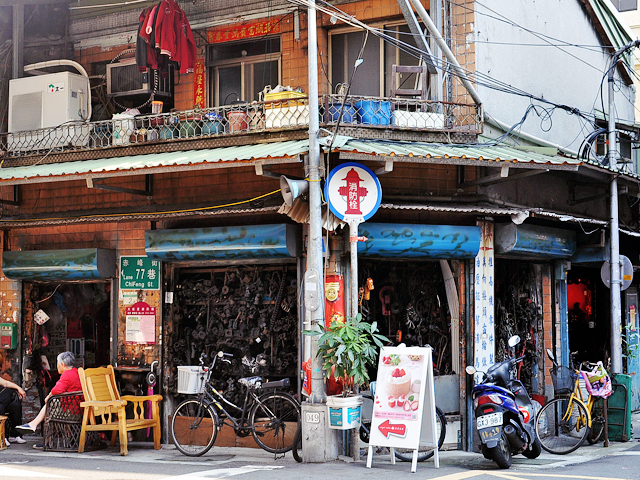
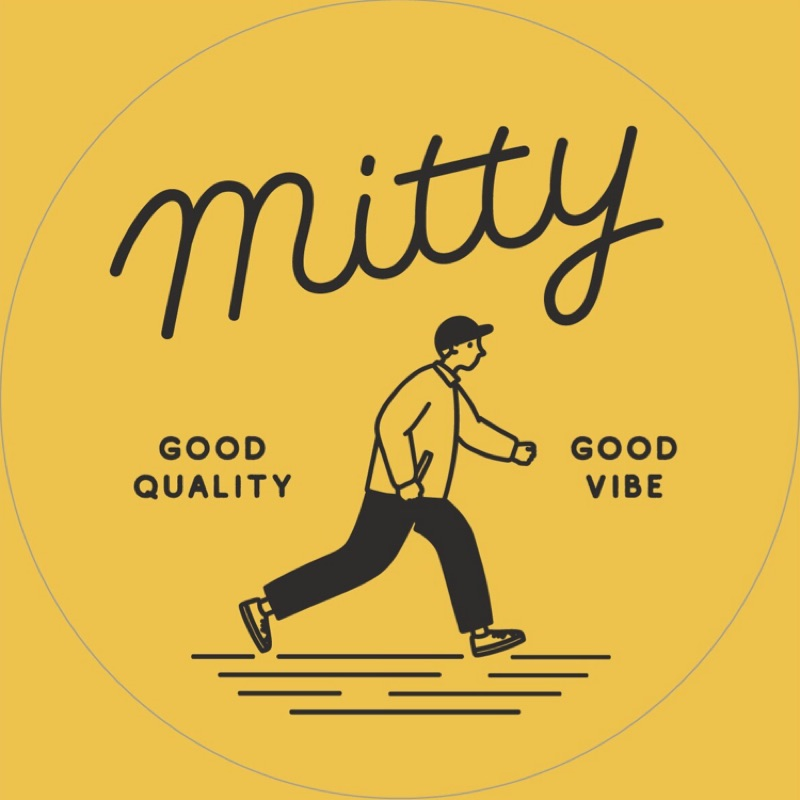

玖拾年代
中山站-現今風貌

周圍景點-赤峰街
這裡俗稱的「打鐵街」，在過去老台北時期以五金、汽車零件店舖為主。隨著時代演變，近年赤峰街老宅巷弄間大量進駐了充滿文青的店家與美食，其中以四處林立的「古著」店最富盛名，如果想要悠閒地度過一個充滿文青氣息的假日，絕對不能錯過！
“搭去曾經是以販賣汽車零件及五金為主的赤峰街、承德路一帶又被稱為「打鐵街」”

小知識

私心推薦-Mitty古著店
Mitty古著是，當你膩了快時尚時能夠休息緩緩的地方，讓你能形塑出獨一無二的你的地方，一個相對環保的地方，一個充滿驚喜的地方，是一個大衣櫃能隨意搭配穿搭的地方。一個吸引你的地方。
“店內販售各式古著，隨你挑選。營業時間:14:00-21:00”
小知識